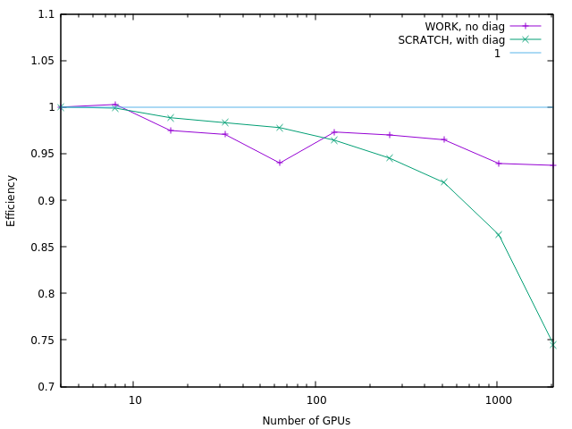

Highlights¶
Improved performance using GPU offloading¶
Smilei computational performance has been recently enhanced with GPU offloading support. In particular, current projection has been accelerated with a CUDA kernel while other features have been accelerated with the use of either OpenAcc or OpenMP pragmas.
Smilei can be tested on recent supercomputers such as Adastra where it shows great weak scaling efficiency even while using diagnostics as shown in figure below:
{kind=link}
Mitigation of numerical artifacts with relativistic particles¶
The staggering in space and time of the electromagnetic fields and the numerical dispersion of electromagnetic solvers using finite differences in the time domain, typically used in electromagnetic Particle in Cell codes, create numerical artifacts that become increasingly detrimental in presence of relativisitc macro-particles.
A typical example of simulation where the effects of these artifacts can become relevant and alter the numerical results is Laser Wakefield Acceleration. In this kind of simulation, a numerical artifact called Numerical Cherenkov Radiation is generated by the spurious interaction between relativistic macro-particles and electromagnetic fields that are numerically slower due to the dispersion of the Finite Difference Time Domain solver for Maxwell’s equations. This artifact can significantly alter the dynamics of relativistic electron beams accelerated in plasma waves, quickly increasing their divergence along their propagation in the plasma.
Recently an interpolation scheme called B-TIS3 has been implemented in the code CALDER and published in P.-L. Bourgeois, X. Davoine (2023) This scheme can significantly reduce the effects of Numerical Cherenkov Radiation and of the staggering of the electromagnetic fields, as shown in this Figure:
{kind=link}
Both panels show a field proportional to the y component of the Lorentz force acting on the electron macro-particles in a Smilei simulation of Laser Wakefield Acceleration. Top panel: simulation not using the B-TIS3 interpolation. Bottom panel: simulation using the B-TIS3 interpolation. The high frequency modulations, due to the Numerical Cherenkov Radiation are evident in the top panel, while they are considerably reduced in the bottom panel. These two simulations were obtained using the AMcylindrical geometry (1 azimuthal mode) and the Laser Envelope model.
Laser Envelope model and averaged tunnel ionization¶
Laser-plasma interaction in underdense plasmas can be accurately simulated under certain conditions through a laser envelope model, where the high frequency oscillations of the laser pulse do not need to be resolved. In this model the laser effect on the plasma is described through the ponderomotive force and the effect of the precence of the plasma on the laser pulse is described through the plasma susceptibility. These terms in the laser plasma interaction can be expressed only as function of the laser complex envelope.
This technique relaxes the constraint on the minimum spatial and temporal scales to be resolved and can yield speed-ups of some orders of magnitude, expecially if coupled with a purely cylindrical geometry (where only one azimuthal mode is taken into account).
The envelope model is particularly used for Laser Wakefield Acceleration, where often the laser pulse envelope is at least ten times longer than the laser carrier wavelength. Recently an new averaged tunnel ionization model has been developed for the envelope model, allowing the simulation of Laser Wakefield Acceleration with ionization injection with this efficient technique.
Following is the comparison of the electron density from two LWFA simulations, one using the laser envelope model and the averaged tunnel ionization module (a) and one without the envelope model (b).
{kind=link}
In these simulations an intense laser pulse is propagating in a plasma composed of helium and partially ionized nitrogen. The laser field near the pulse’s center is intense enough to further ionize the nitrogen ions, releasing electrons that can be trapped and accelerated in the relativistic plasma wave behind the laser pulse.
Previous averaged tunnel ionization models did not allow to accurately describe this LWFA scheme at relativistic regimes. In this new model also the longitudinal momentum of the electrons obtained through ionization is initialized following analytical derivations. Including this longitudinal momentum initialization allows to accurately describe the dynamics of these electrons.
Following is a comparison of the accelerated electron spectra at the end of these simulations.
{kind=link}
In the green line it is shown the result of the previously known averaged ionization model. Without the longitudinal momentum initialization, few electrons obtained through ionization are trapped and accelerated in the plasma wave. The red line shows the result with the new averaged ionization model implemented in Smilei, which accurately reproduces the spectrum obtained with the standard laser simulation without an envelope model.
The envelope simulation required an amount of computing resources orders of magnitude smaller than those required by the simulation without a laser envelope model.
More details on the envelope model and the averaged tunnel ionization model in Smilei can be found here
Field initialization of a relativistic particle beam¶
In Plasma Wakefield Acceleration (PWFA) a plasma wave is generated behind a relativistic particle beam propagating in a plasma.
To simulate this phenomenon, it is necessary to self-consistently initialize the electromagnetic fields of a relativistic particle beam in vacuum, before its entrance into the plasma.
Following is the image of a PWFA simulation which used this technique at its start.
{kind=link}
The “driver” relativistic electron beam (in yellow) propagates through a plasma and drives a nonlinear Langmuir wave (in blue) that propagates at a velocity close to that of light in its wake. A “witness” relativistic electron bunch injected in this wave can be accelerated with electric fields orders of magnitude higher than those sustainable by metallic radio-frequency accelerating cavities.
Azimuthal Fourier decomposition¶
In Laser Wakefield Acceleration (LWFA) a plasma wave is generated behind an intense laser pulse propagating in an underdense plasma. The physics in this phenomenon cannot be accurately simulated through 2D Cartesian simulations. Nonetheless, 3D Cartesian simulations can be computationally demanding, hence preliminary studies for LWFA experiments, typically consisting of many PIC simulations, cannot be realissically be carried with 3D Cartesian simulations.
The azimuthal Fourier decomposition addresses this issue by using a cylindrical grid, hence a 2D grid, decomposing the fields in azimuthal harmonics to take into account a third dimension in space and treating macro-particles in the 6D phase space.
This technique can yield thus simulations with a computational cost comparable to that of 2D simulations, but at the same time with an accuracy comparable to that of a full 3D Cartesian simulation.
Following is the image of a LWFA simulation using azimuthal Fourier decomposition, which has made it feasible in a medium-scale laboratory cluster. An equivalent 3D Cartesian simulation would have required an amount of resources greater by at least an order of magnitude.

The laser (in red) propagates through a low density plasma and drives a nonlinear Langmuir wave (in blue) that propagates at a velocity close to that of light in its wake. In this simulation, a moving window is used so we can follow the laser as it propagates through the plasma. We see electrons being self-injected in this wakefield where they see a strong electric field that accelerates them up to ultra-relativistic (GeV) energy level.
An animation generated from the simulation data can be found here
Improved performance using vectorization¶
Smilei computational performance has been recently enhanced with vectorized operations, in particular the projection of currents and the interpolation of fields. Typically, the new algorithms are more efficient than the old ones above 10 particles per cell, up to 3 times faster. An adaptive switching technique ensures that the best version is used, dynamically and locally.
This has been validated on large-scale simulations. An example of a mildly-relativistic collisionless shock simulation is provided in Fig. 1 (watch the video).

Fig. 1 Mildly-relativistic collisionless shock simulation, with two drifting plasmas colliding in the middle of the box. Top panel: electron density. Bottom panel: regions switched to vectorized operators are highlighted.¶
High-density regions are switched to vectorized operators while low-density regions remain scalar (they have only 8 particles per cell). In this particular case, the treatment of particles can be sped-up by 2.
For more details, checkout the doc and this ArXiV paper.
Scalability in a wakefield acceleration simulation¶
Wakefield-acceleration of electrons in an underdense plasma creates a hotspot of electrons, which makes the simulation strongly imbalanced. This spot represent a large part of the total calculations, so that more computing power should be allocated on it.
Please refer to the doc Parallelization basics to learn the basics of the parallelization techniques employed in this section.
1. OpenMP
In a local area around this hotspot, OpenMP is able to manage the computing resources to make the overall simulation faster. The following figure shows the evolution of the time to calculate 100 iterations, as a function of time. Each line corresponds to a different partition of the box in terms of MPI processes and OpenMP threads: \(N\times M\), where \(N\) is the total number of MPI processes, and \(M\) is the number of threads in each MPI process.
{kind=link}
Using more OpenMP threads per MPI process (while keeping the total number of threads constant) clearly reduces the simulation time, because the computing power is balanced within each MPI patch collection.
2. Dynamic load balancing between MPI processes
At the global simulation scale, OpenMP cannot be used to smoothen the balance. Instead, a dynamic load balancing (DLB) algorithm periodically exchanges pieces of the simulation box (patches) between MPI processes, so that each MPI process owns a fair amount of the simulation load. The following figure shows how this balancing reduces the time of the simulation.
{kind=link}
The red curve is the best situation obtained in the previous section, while the curves with dynamic load balancing are indicated as DLB.
The portion of the box belonging to each MPI process varies when the load balancing occurs. The following figure shows how each of these portions evolve with time.
The four panels correspond to four timesteps during the simulation. The colorscale represents the log-scaled load of each patch. The lines show the borders of each MPI process’ portion of the box. The MPI processes that are close to the hotspot tend to handle a smaller portion of the box.
High-harmonic generation¶
The interaction between an ultra-intense (\(I>10^{18}~{\rm W/cm^2}\)) femtosecond laser pulse with a solid target generates a dense “plasma mirror” at its surface that reflects the laser in a strongly non-linear manner. The temporal distortion of the reflected wave creates a train of ultra-short attosecond pulses, associated, in the frequency domain, to a comb of high-order harmonics.
We present a 2-dimensional Smilei simulation of laser-solid interaction with wavelength \(\lambda_0 = 0.8\) µm, peak intensity \(2\times10^{19}~{\rm W/cm^2}\), at 45° incidence with p-polarization on an overdense plasma slab of constant electron density \(n_0=200\,n_c\) (\(n_c\) being the critical density), \(5\lambda_0\)-thick, with an exponential pre-plasma of gradient length \(0.1\,\lambda_0\) down to a cut-off density \(0.05\,n_c\). The full box size is \(80\,\lambda_0 \times 60\lambda_0\) and the simulation time \(150\,\lambda_0/c\) with a total of \(\sim 1.4\) billion quasi-particles in the box.
The following figure (top panel) shows half of the simulation box in the y-direction, and the laser field is reported at three different times. The reflected laser pulse (at time \(t_2\)) shows a different spectral content than the incident pulse (at time \(t_0\)). A close-up view of the interaction region is given in the bottom panel, illustrating the electron bunches being pulled out from the plasma surface.

Fourier analysis of the reflected laser field, in space and time, provides the angular distribution of the frequency spectrum of the reflected light, shown in the following figure (top panel). High harmonics appear up to order 16.
{kind=link}
The bottom panel shows trajectories of accelerated electrons ejected from the target. The angular histogram shows that the momenta of the escaping energetic electrons (1 to 10 MeV) are mostly directed along two directions which are close to the reflected laser direction.
This simulation was run on the CINES/Occigen (Bullx) machine using 256 MPI x 14 OpenMP threads for about 10700 CPU-hours. The characteristic computing time per particle (average PIC iteration divided by the number of particles) is of the order of 0.7 µs, including 25% for diagnostics.
Brillouin amplification¶
Coupling, in a plasma, a long energetic “pump” pulse of moderate intensity to a short counter-propagating “seed” pulse of initially low intensity can transfer energy from the pump to the seed thanks to the excitation of a plasma or ion-acoustic wave.
Here, we look specifically at the stimulated Brillouin scattering (SBS) amplification, where the excited waves are ion-acoustic waves.
A pump with intensity \(10^{15}\) W/cm² (wavelength 1 µm) correspond to the “strong-coupling” regime, particularly robust with respect to plasma inhomogeneities and seed frequency [Chiaramello2016].
A 2-dimensional simulation, in conditions close to actual experiments, ran on a box size of 1024 µm x 512 µm for 10 ps with 25 billion quasi-particles. The following figure shows the evolution of the pump and seed intensities in the head-on collision at three different times. Surfaces corresponding to the laser intensity are overlaid on top of surfaces corresponding to the plasma density.
The final seed intensity is nearly 5 times its initial intensity while the spot size and phase front are well conserved, suggesting that such a beam could be further focused using plasma mirrors.
This simulation used the IDRIS/Turing (BlueGene/Q) super-computer using 1.8 million CPU-hours on 32768 MPI processes, and 4 OpenMP threads per core. The average time to push a particle was 1.9 µs, including 5% for diagnostics. On the CINES/Occigen (Bullx) machine, we obtained an average time of 0.43 µs to push one particle (without diagnostics).
Magnetic reconnection at the Earth magnetopause¶
Magnetic reconnection at the Earth magnetopause regulates the transport of matter, momentum and energy from the solar wind to the internal magnetosphere. The solar wind plasma temperature is typically one tenth that of the magnetospheric plasma, but its density is about ten times larger, and its magnetic field 2-3 times smaller. This asymmetry makes the reconnection dynamics vastly more complex than in symmetric environments, and has only been studied for a decade via numerical simulations and spacecraft observations.
Studying the impact of a plasmaspheric plume on magnetopause reconnection via kinetic numerical simulation is difficult. The simulation first needs to reach a quasi-steady state reconnection with a typical magnetopause asymmetry, see the arrival of the plume and then last longer for a quasi-steady state plume reconnection regime to settle. Due to the large particle density of plumes, the transition and last phases have substantially longer time scales than the early phase, which makes the simulation heavy. The domain must be long enough in the downstream direction for the plasma, expelled during the early and transition phases, to be evacuated from the reconnection region. Otherwise, upstream plasma would not inflow, thereby stopping reconnection.
Three ion populations are present. The solar wind and magnetospheric populations have densities equal to \(n_0\) and \(n_0/10\), respectively, on their side of the current sheet, and fall to zero on the other side. The plume population increases from 0 to \(2\,n_0\) at \(20\,c/\omega_{pi}\) from the initial current sheet on the magnetospheric side. The magnetic field amplitude goes from \(2\,B_0\) in the magnetosphere to \(B_0=m_e\omega_{pe}/e\) in the solar wind and is totally in the simulation plane. The temperature is initially isotropic and its profile is calculated to balance the total pressure.
The domain size is 1280 \(c/\omega_{pi} \times\) 256 \(c/\omega_{pi}\). The total simulation time is \(800\times\) the ion gyration time. We used a reduced ion to electron mass ratio \(m_i/m_e = 25\), and a ratio 50 of the speed of light by the Alfvén velocity. There are initially 8.6 billion quasi-protons for the three populations, and 13 billion electrons.
{kind=link}
This figure presents some of the simulation results: the electron density at three different times. In the top panel, reconnection is in steady state between the solar wind plasma of density \(\simeq n_0\) and the magnetosphere plasma of density \(\simeq 0.1~n_0\). At this time, the exhaust is filled with mixed solar wind/hot magnetospheric plasma as the plume (of density \(\simeq 2~n_0\)) is still located at \(\simeq 10~c/\omega_{pi}\) from the magnetospheric separatrix. The reconnection rate during this period has a typical value around \(0.1~\Omega_{ci}^{-1}\), with important fluctuations caused by plasmoid formation. The plume, originally at \(20~c/\omega_{pi}\) from the magnetopause, is slowly advected towards the magnetosphere separatrix and finally touches the reconnection site at about \(t=300~\Omega_{ci}^{-1}\). The second panel at \(t=370~\Omega_{ci}^{-1}\) shows the plume starting to fill the exhaust after reaching the reconnection site and mixing with solar wind plasma. At this time, the reconnection rate collapses to about half its previous value. The transition phase lasts for about \(100~\Omega_{ci}^{-1}\) before a plume reconnection regime reaches a quasi-steady state. The third panel shows the electron density at the end of the simulation, where the exhaust is filled with plume and solar wind plasma.
This large-scale simulation has run for a total of 14 million CPU-hours on 16384 cores of the CINES/Occigen (Bullx) supercomputer within a GENCI-CINES special call. Overall, the characteristic (full) push-time for a single particle was of the order of 1.6 µs (including 31% for diagnostics). No dynamic load balancing was used for this simulation.
Collisionless shock in pair plasmas¶
Relativistic collisionless shocks play a fundamental role in various astrophysical scenarios (active galactic nuclei, micro-quasars, pulsar wind nebulae and gamma-ray bursts) where they cause high-energy radiation and particle acceleration related to the cosmic-ray spectrum. In the absence of particle collisions, the shock is mediated by collective plasma processes, produced by electromagnetic plasma instabilities at the shock front.
Specifically, the Weibel (or current filamentation) instability is observed in most of the astrophysical relativistic outflows interacting with the interstellar medium. It can be excited by counter-streaming unmagnetized relativistic flows, and dominates the instability spectrum for a wide range of parameters. The resulting strong magnetic turbulence can isotropize the incoming flow, hence stopping it and leading to compression of the downstream (shocked plasma) and shock formation.
We present a 2-dimensional PIC simulation of such shock, driven in an initially unmagnetized electron-positron plasma. The simulation relies on the “piston” method that consists in initializing the simulation with a single cold electron-positron plasma drifting at a relativistic velocity \(v_0 \simeq 0.995\,c\). Reflecting boundary conditions at the right border creates a counter-penetrating flow.
The simulation box size is 2048 \(\delta_e \times\) 128 \(\delta_e\) (\(\delta_e = c/\omega_p\) being the electron skin-depth of the initial flow), with a total of 2.15 billion quasi-particles. The following figure show an unstable overlapping region of incoming and reflected flows, resulting in the creation, before the shock of filamentary structures in both the magnetic field (panel a) and the total plasma density (panel b).
{kind=link}
The magnetic field at the shock front becomes turbulent and it is strong enough to stop the incoming particles leading to a pile-up of the plasma density (panel c).
The following figure demonstrates the build-up, at late times, of a supra-thermal tail in the downstream particle energy distribution. It is characteristic of first-order Fermi acceleration at the shock front, and appears to follow a \(\gamma^{-2.5}\) power law.
{kind=link}
This simulation run on the TGCC/Curie machine using 128 MPI x 8 OpenMP threads for a total of 18800 CPU-hours for 49780 timesteps. The average push time for one quasi-particle was of 0.63 µs (including 20% for diagnostics).